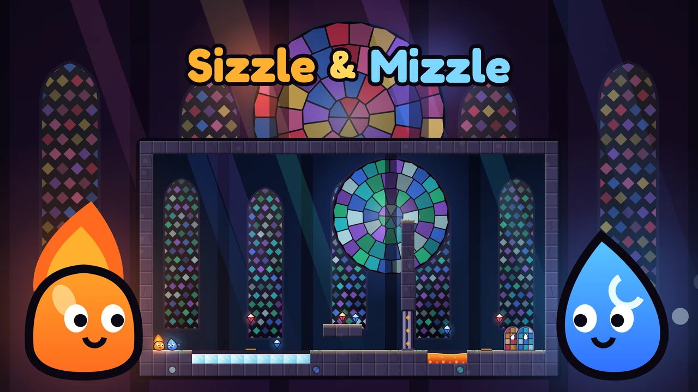

Hexan.js — FPSA subscription is required to play. Subscribe to play
No downloads or plugins. Direct browser execution.Sizzle & Mizzle
Guide Sizzle the fire spirit and Mizzle the mist spirit through 40 stained-glass temple levels, alone with a swap button or with a friend on one screen.
Sizzle & Mizzle is a two-spirit puzzle platformer set inside a glowing temple of stained glass. Sizzle is a little ember who strolls across lava but fizzles out in water; Mizzle is a drop of mist who wades through water but boils away in lava. Gloom pools swallow anyone. Bring both spirits to their own doors to clear a level.
The twist is that their powers combine. Sizzle's flare lights braziers, melts ice and bakes wet clay into solid brick, and it boils a water pool into a rising column of steam that lifts anyone standing on it. Mizzle's splash fills fonts, freezes water into an ice bridge that Sizzle can cross (if he does not stand still too long), and soaks dusty walls into mud you can climb through. Pressure plates, levers, gates, lifts and crates tie the two routes together, so every level is a small conversation between fire and water.
There are 40 hand-made levels in four chapters: the Ember Nave, the Rain Cloister, the Kiln Crypt and the Rose Spire. Every level was proven solvable by an automated solver in both its normal and mirrored form. Each level has three clearly explained stars (finish, collect every gem, beat the par time) and a speed rank from S to C. A goal card shows the stars before you start, the HUD tracks gems and time, and the results card explains what you earned and what you missed. The game never moves on by itself and a restart is instant.
Play alone or together. On a phone one player steers one spirit at a time and taps the swap button to switch. On an iPad two friends share the screen with split controls, one on each side. On a computer two players share the keyboard: A, D, W and S for Sizzle, the arrow keys for Mizzle.
Every day brings a Daily mirror: one level, flipped, the same for everyone, with a streak to keep. After every clear you see your global standing and percentile (currently from a clearly labelled offline preview board), and you can share a duo time card or send a beat-my-time challenge link that opens the same level for a friend. Earn stars, S ranks and daily streaks to unlock new looks for both spirits. Progress, best times and cosmetics are saved on your device automatically. All art, music and sound are generated in the game, with nothing downloaded.